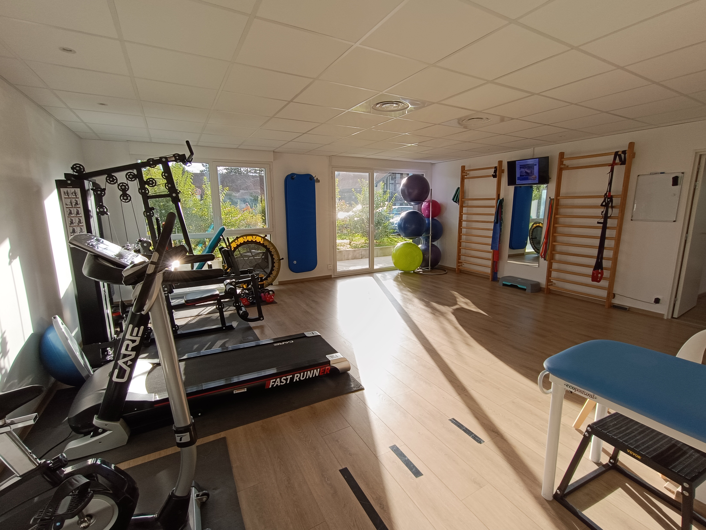
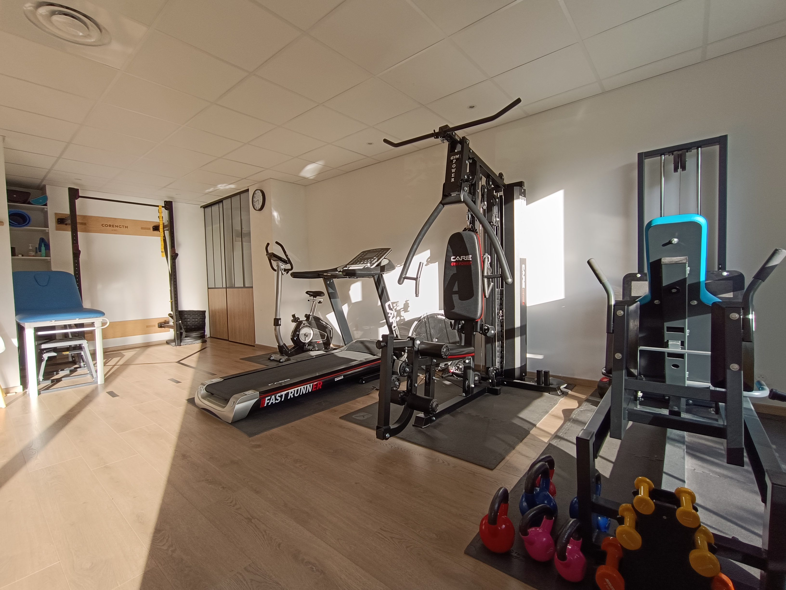
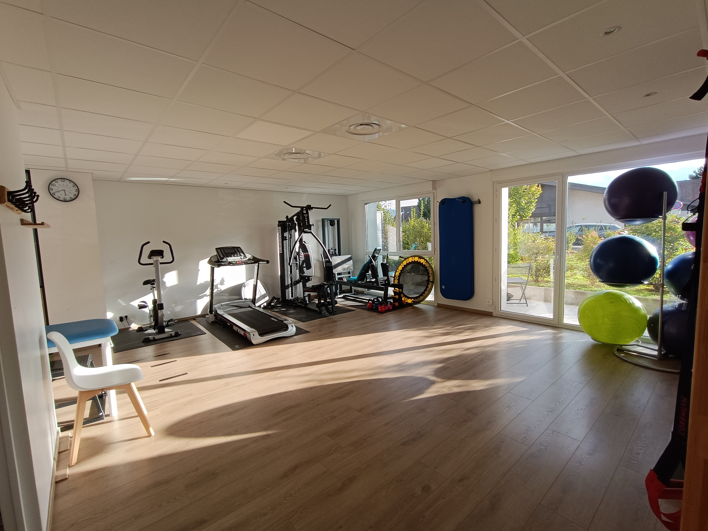

Le Plateau Technique & Le Gymnase
Un espace de rééducation actif, lumineux et climatisé, spécialement conçu pour vous accompagner du bilan initial jusqu'au reconditionnement maximal.



Équipements du Cabinet
- Espace Renforcement & Force : Rack à squat, presse, machine multi-fonction (leg-extension & leg-curl), haltères et kettlebells.
- Espace Cardio & Réathlétisation : Tapis de course et vélo stationnaire.
- Espace Mobilité & Pilates : Espaliers, matériel de Pilates, élastiques, ballons de rééducation.
- Salles Individuelles : 3 salles de soin individuelles d'environ 11 m² assurant confidentialité et sérénité.